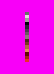
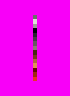
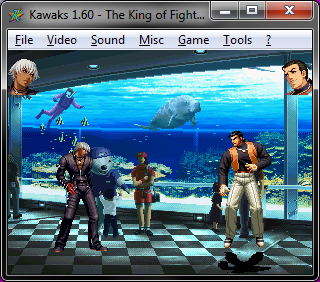
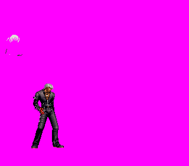
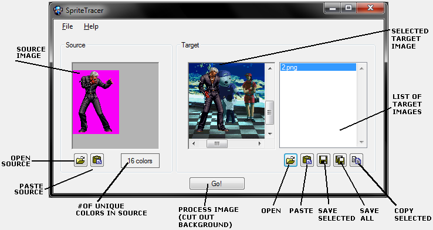

SpriteTracer 2.1
By Grim (neuropod@gmail.com) - http://spritedatabase.net
This is a new app I developed to quickly cut the backgrounds out of video game screenshots.
Source, Target, & Result
Using this app requires you to provide a source image and one or moe target images. The result images will be produced from those by the app.
| Source Examples | Target Example | Result Example |
   |
 |  |
| A sprite on its own (plus background color) makes an ideal source. But really all we're looking for is an image with the colors you want to keep; either of the images above will work equally well as the source. | The target should include the sprite you want to cut out, plus all the other undesirable elements like backgrounds, other characters, etc. Usually it'll be a screenshot. | The result is the program output! The target, minus all the colors that weren't found in the source! |
Interface

Using the App
So you've got a source and one or more targets. Now you must load them into the app.
- Choose a source image. There are two ways you can do this.
- Open a file from your hard drive. (PNG or BMP)
- Paste an image that has been copied to the clipboard.
- The source image will now show in the source panel.
The color count will also be updated to reflect how many colors are in the source image. (Most sprites will be 16 or less.)
- Choose one or more target images. Like the source image, you can open a file or paste an image from the clipboard.
You can add more targets by opening additional files (one at a time or all at once) or pasting additional images.
You can scroll through the list on the right to view all target images.
- Click "Go!" to process all images. You will be able to view the newly edited images in the target panel, which is now technically the result panel.
Again, you can scroll through the list to view each one.
- You have a few options for exporting these new images:
- Save the selected images straight to the hard drive as PNG files.
- Save all result images to the hard drive as PNG files.
- In either case, each file will be numbered with the filename you enter as a prefix.
ie, if you enter "screen" you will get screen1.png, screen2.png, etc.
- In either case, each file will be numbered with the filename you enter as a prefix.
- You can also copy the selected image to the clipboard so you can paste it into your main graphics editor.
- That's it, you're done!
Other Features
- You can delete the source and all target images. File > Clear all
- You can also set the background color to be used in the editing process. File > Set BG Color.
Notes
- Large images, large amounts of target images, and source images with many colors may cause the program to run slowly or even crash.
- This tool is best used with emulators lacking layer disable features, or games where such features are present but not that helpful.
- You can load new targets while keeping the same source, and vice versa.
Version History
- 2.1 (2/5/2012)
- Added keyboard shortcuts.
- Improved memory management (open files can now be changed or deleted by other applications.)
- Added the ability to store multiple target images, and updated other features accordingly.
- Added Save All feature.
- Improved layout slightly.
- Added better BG Color selection using ColorDialog.
- Initial release; able to process one target image at a time.